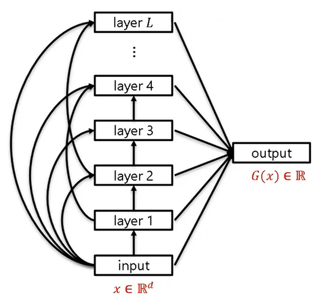

MSR AI Seminar: Why Does Deep Learning Perform Deep Learning?
record video link on bilibili 👉 MSR AI Seminar: Why Does Deep Learning Perform Deep Learning?
main question
how does “deep layers” work?
Deep learning = hierarchical feature learning
observation
adding more layers and train holistically will improve the accuracy, though the previous layers are already fully converged.
You can’t expect what it learns from what you build
focused object
we only consider densenet with quadratic activation function

proof target
densenet with wider layers will learn a target densenet effeciently in arbitrary accuracy
“wider” means overparameterize
“efficient” means converging with arbitrary accuracy \(\epsilon\) using \(\text{poly}(d,\frac{1}{\epsilon})\) samples, \(d\) dimensions
assumptions
weight matrices in the target net are well-conditioned: not degenerated. the output will be a \(2^L\) degree poly
information gap: let \(a_i\) be the coefficient in the linear combination of output, \(a_i >> a_{i+1} >> 1/d^{0.01}\). note: \(G(x)=\sum_i^La_iL_i\), where \(L_i\) is the sum of the output nodes of layer \(i\)
\(L\approx O(\log\log d)\)
shallow model will not learn efficiently, usually \(d^{2^L}\) samples, while deep model uses \(2^{2^L}\) samples which is \(\text{poly}(d)\)
intuition proof
Step 1: about overparameterization
If we wish to learn \(G(x)=x_1^2+x_2^2+\alpha(x_1^4+x_2^4)\), \(\alpha=0.1\)
We hope the first layer to learn \(x_1^2\), \(x_2^2\), second layer to learn \(\alpha(x_1^4+x_2^4)\)
but first layer may give an output which we cannot reconstruct \(x_1^4+x_2^4\) from
solution: over-parametrization and Gaussian random init
rich representation for the next layer (not necessary useful for current layer)
Step 2
If we wish to learn \(G(x)=x_1^2+x_2^2+\alpha((x_1^2+x_3)^2+(x_2^2+x_4)^2)\), \(\alpha=0.1\)
Chances are that the first layer learns \((x_1+\alpha x_3)^2+(x_2+\alpha x_4)^2\) from which the next layer cannot reconstruct the remaining terms
layer-wise training overfits to higher-level signals, not noise
solution: training both layers together, second layer will fix the first layer
Step 3
first layer: \(\alpha\) close (to the ground-truth poly)
\(\xrightarrow{learn}\) second layer (learns the residual): \(\alpha^2\) close
\(\xrightarrow{correction}\) first layer (correction): \(\alpha^2\) close
\(\xrightarrow{re-learn}\) second layer: \(\alpha^4\) close
…
more layers means more corrections to the previous layers
layers are learned simoutaneously
important: backward feature correction
feature visualization:
find the picture that activates a specific neuron the most by Gradient Descent
weakness: relies on strong regularization to make it more like a image, otherwise a meaningless noise picture
adversarial perturbation